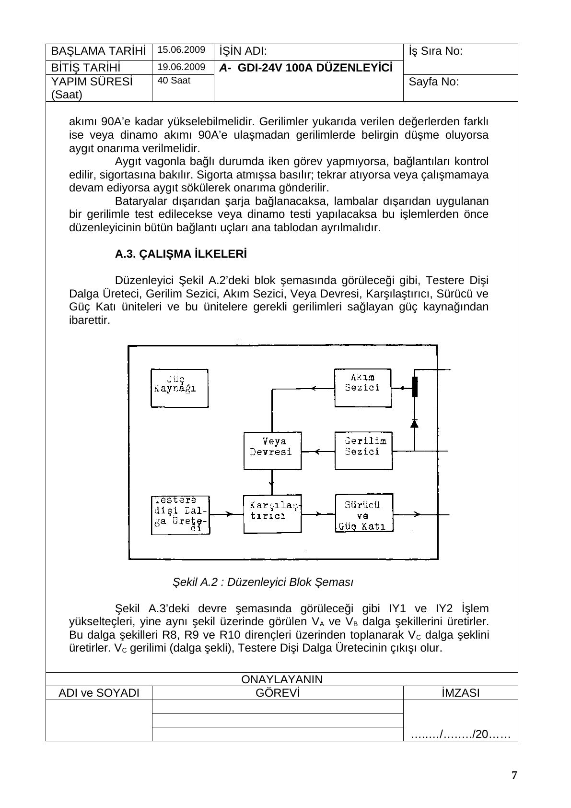
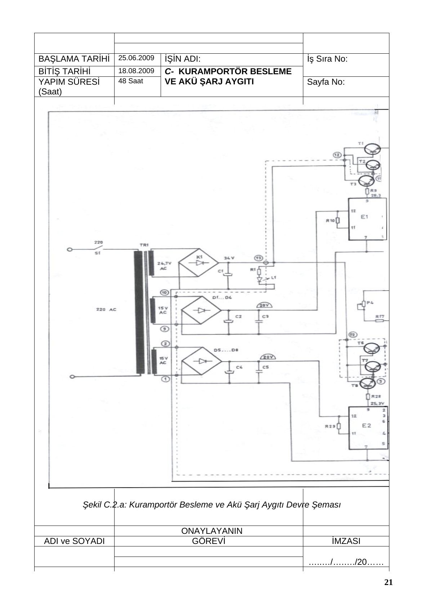
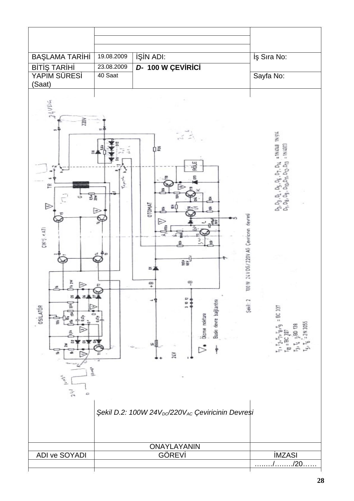
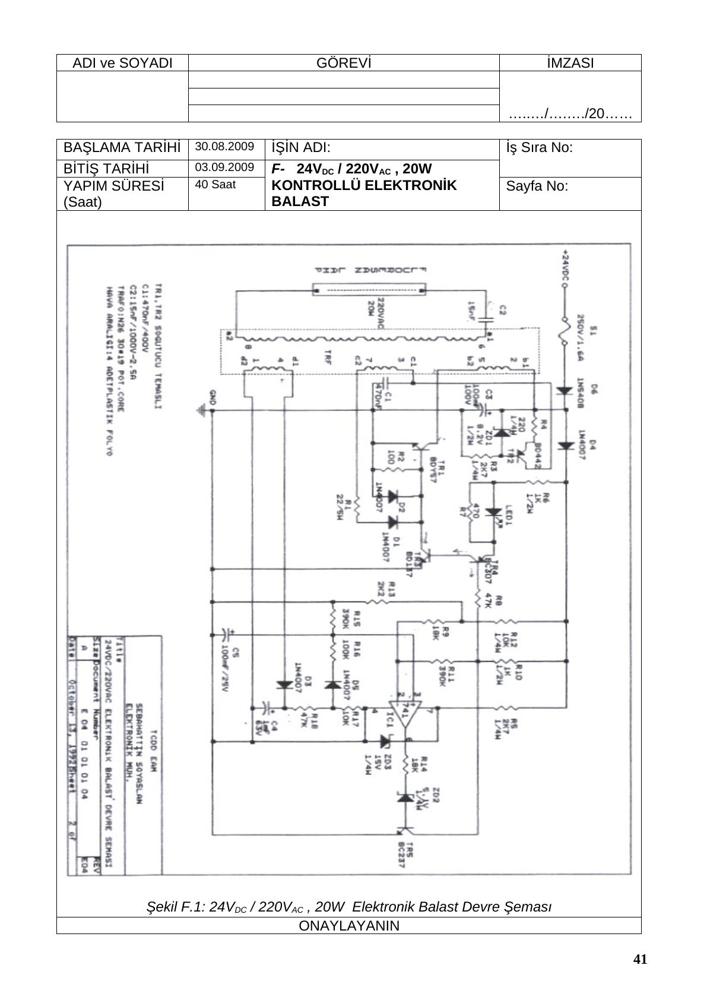
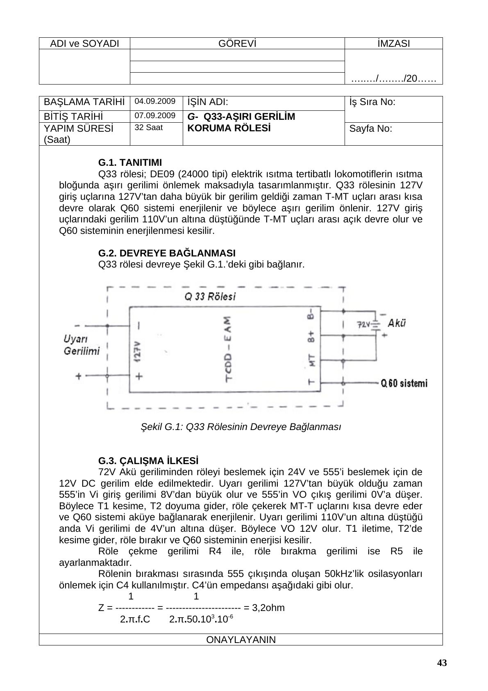
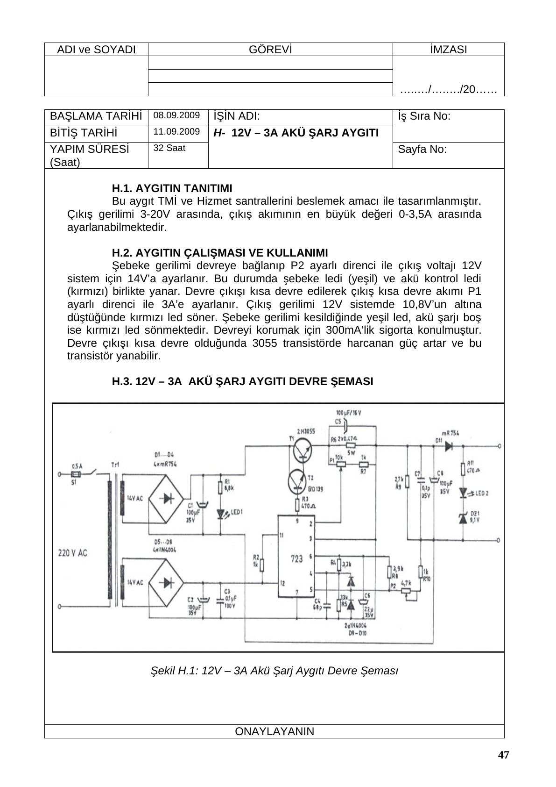

· STAJ
STAJ Yaz Stajı: TCDD Elektronik Araştırma Merkezi staj defteri (2009), regülatör, çevirici, yanar söner ve akü şarj aygıtları
STAJ – Yaz Stajı · 11.09.2009 · 14.11.2026
Bu yazı, TCDD Elektronik Araştırma Merkezi (EAM) Müdürlüğü'nde (Ankara) yapılan bir yaz stajına ait, 2009 tarihli staj defterinin metnidir (49 sayfa). Defter; birimin tanıtımını, günlere dağıtım çizelgesini ve sekiz aygıt için tanıtım, devreye bağlama, çalışma ilkesi, ayar ve parça listesi bölümlerini içerir. Aynı birimde 2013'te yapılan bir staj için bkz. TCDD EBOM staj raporu. Staj defterindeki kişi adları, imzalar ve mühür çıkarıldı (teşkilat şeması sayfası PDF'ten kaldırıldı). Aygıt bilgileri birimin kendi teknik anlatımlarından oluştuğundan yazının kaynağı TCDD EAM'dir. Parça listeleri tablodan metne aktarılırken satır sırası karışmış olabilir; şekiller ve doğru yerleşim için orijinal sayfalar yazının sonunda PDF olarak indirilebilir.
İş yeri tanıtımı
Elektronik Araştırma Merkezi Müdürlüğü, TCDD Yönetim Kurulu'nun 07.06.1973 tarih ve 23/221 sayılı yetki kararı ile kurulmuştur. Görevi; TCDD bünyesinde mevcut ve kurulacak elektrik-elektronik sistemlerde araştırma-geliştirme, onarım ve imalat çalışmalarının en iyi ve ekonomik biçimde, rasyonel bir organizasyonla yürütülmesidir. Merkez çalışmalarını Araştırma-Geliştirme Teknik Müdürlüğü ve İmalat-Onarım Teknik Müdürlüğü aracılığıyla yönetmelik, tüzük ve diğer mevzuat çerçevesinde yürütür. (Teşkilat şemasında müdür, teknik işler müdür yardımcısı, personel ve idari işler, satın alma, malzeme, bakım ve sinyalizasyon birimleri yer alır; kişi adları çıkarıldı.)
Pratik çalışmanın günlere dağıtım cetveli
Defterin 3.-4. sayfasındaki çizelgeye göre çalışma, 15 Haziran – 11 Eylül 2009 arasında 40 iş günü (320 saat) sürmüş ve aşağıdaki aygıtlar üzerinde yürütülmüştür:
| Aygıt | Tarihler (2009) | Gün |
|---|---|---|
| A- GDI-24V 100A düzenleyici | 15–19 Haziran | 5 |
| B- 24V DC/220V AC çevirici 600 VA | 20–24 Haziran | 5 |
| C- Kuramportör besleme ve akü şarj aygıtı | 25–28 Haziran, 17–18 Ağustos | 6 |
| D- 100 W çevirici | 19–23 Ağustos | 5 |
| E- Yanar söner | 24–29 Ağustos | 6 |
| F- 24VDC/220VAC, 20W kontrollü elektronik balast | 30 Ağustos – 3 Eylül | 5 |
| G- Q33 aşırı gerilim koruma rölesi | 4–7 Eylül | 4 |
| H- 12V–3A akü şarj aygıtı | 8–11 Eylül | 4 |
Her gün 8 saat çalışılmıştır. Çizelgedeki iş yeri amiri ve öğrenci imza alanları boştur.
Üçüncü taraf kaynak notu: Bu içerik TCDD EAM'e ait bir staj defteri şablonu/örneği niteliğindedir; arşiv ve nostalji amacıyla kaynak belirtilerek paylaşılmıştır. Hak sahibinin talebi hâlinde kaldırılır.
A- GDI-24V 100A düzenleyici (dinamo regülatörü)

A.1. TANITIMI
Vagonlarda aydınlatma ve diğer amaçlar için kullanılan 24V’luk gerilim, düzenleyici (dinamo) ve bataryaların oluşturduğu düzenekten elde edilir. Vagon hareketsiz iken 24V’luk gerilim doğrudan bataryadan alınır. Vagon hareket durumunda iken dinamo devreye girer. Dinamonun ürettiği gerilim bataryaları doldurur ve diğer devreleri besler. Dinamo gerilimi, dinamonun dönme hızına ve alan akımına bağımlıdır. Bu nedenle dinamo çıkışı doğrudan bataryalara ve diğer aygıtlara uygulanmaz. Dinamo çıkış geriliminin değişmez yapılması gerekir. Bu da düzenleyici (nazım) ile sağlanır. Düzenleyici, dinamo gerilimini belirlenen bir değerde değişmez yapacak şekilde saha akımını denetler. Saha akımı, dinamo yavaş dönerken yüksek, hızlı dönerken düşük olur. Düzenleyici aynı zamanda dinamo akım sınırının aşılmasını da engeller.
EAM’de yapılan düzenleyiciler yarıiletken devre elemanları (transistör, diyot, tümleşik devre vs.) ile gerçekleştirilmiştir. Hareketli hiçbir parçası yoktur. Gerilim ve akım ayarları imalat sırasında yapılır. Düzenleyiciler alan direnci 4,5Ω dan büyük bütün dinamolarla birlikte kullanılabilir.
Tablo 1 de GDI-24V 100A düzenleyicinin teknik özellikleri verilmiştir.
Tablo 1: GDI-24V 100A düzenleyicinin teknik özellikleri
| Özellik | Değer |
|---|---|
| Şarj gerilimi ayar bölgesi | 22 V – 32 V |
| Şarj gerilimi (imalatta ayarlanır) | 29,5 V ± 0,5 V |
| Dinamo akımı ayar bölgesi | 50 A – 150 A |
| Dinamo akımı (imalatta ayarlanır) | 100 A ± 10 A |
| En az dinamo alan direnci | 4,5 Ω |
| Çalışma sıcaklığı | −10 °C ile +60 °C |
| Ağırlık | 21,5 kg |
| Boyutlar | 21,5 cm × 35 cm × 13 cm |
A.2. KULLANILMASI
A.2.1- DEVREYE BAĞLANMASI
GDI-24V 100A düzenleyicinin bağlantı biçimi Şekil A.1’de verilmiştir.
Şekilde ana tablo üzerinde bulunması gereken dinamo, batarya, lamba devresi sigortaları ve ana tablonun diğer detayları gösterilmemiştir. Düzenleyici Şekil A.1‘deki durumu sağlayacak biçimde ana tabloya bağlanmalıdır.
Şekil A.1 : Düzenleyicinin Bağlantı Şeması Devreden de izlenilebileceği gibi +D, +F ve –D terminalleri sırasıyla dinamonun +, F (alan sargısı) ve – uçlarına bağlanır. +B ucu bataryanın + ucuna, +L ucu da lamba devrelerine gider. +D, +B ve +L terminallerine bağlanan iletkenler en az 3 mm2, +F ve –D terminallerine bağlanan iletkenler de en az 4 mm2 kesitinde kablo veya bara olmalıdır. Bağlantı direncinin düşük olması için terminal vidalarının iyice sıkılması gerekir.
Yanlış bağlantı yapmak aygıta zarar verebilir.
Bağlantılar yapıldıktan sonra aygıtın yan yüzünde bulunan otomatik sigortaya basılarak aygıt çalışır duruma getirilir.
A.2.2. BAKIM
Düzenleyici, gerilim ve akım ayarları imalat sırasında yapıldığından normal koşullarda bir ayar gerektirmez. Yalnızca +D terminali tarafındaki yan yüzde bulunan otomatik alan sargısı sigortasını kurmayı unutmamak gerekir. Bu sigortanın atık olma durumunda alan sargısından akım geçmeyeceğinden dinamo gerilim üretmeyecektir.
Alan sigortasının atması bataryaların şarj olmaması veya su kaybetmeleri aygıtın anormal çalışma belirtileridir. Bu durumda düzenleyici, test aygıtında denenmelidir. Test sırasında dinamo gerilimi 29.5V, lamba ve batarya gerilimi 28V civarında olmalıdır. Yük arttırılarak bu gerilimlerin sabit kalması koşuluyla dinamo akımı 90A’e kadar yükselebilmelidir. Gerilimler yukarıda verilen değerlerden farklı ise veya dinamo akımı 90A’e ulaşmadan gerilimlerde belirgin düşme oluyorsa aygıt onarıma verilmelidir.
Aygıt vagonla bağlı durumda iken görev yapmıyorsa, bağlantıları kontrol edilir, sigortasına bakılır. Sigorta atmışsa basılır; tekrar atıyorsa veya çalışmamaya devam ediyorsa aygıt sökülerek onarıma gönderilir.
Bataryalar dışarıdan şarja bağlanacaksa, lambalar dışarıdan uygulanan bir gerilimle test edilecekse veya dinamo testi yapılacaksa bu işlemlerden önce düzenleyicinin bütün bağlantı uçları ana tablodan ayrılmalıdır.
A.3. ÇALIŞMA İLKELERİ
Düzenleyici Şekil A.2’deki blok şemasında görüleceği gibi, Testere Dişi Dalga Üreteci, Gerilim Sezici, Akım Sezici, Veya Devresi, Karşılaştırıcı, Sürücü ve Güç Katı üniteleri ve bu ünitelere gerekli gerilimleri sağlayan güç kaynağından ibarettir.
Şekil A.2 : Düzenleyici Blok Şeması Şekil A.3’deki devre şemasında görüleceği gibi IY1 ve IY2 İşlem yükselteçleri, yine aynı şekil üzerinde görülen VA ve VB dalga şekillerini üretirler. Bu dalga şekilleri R8, R9 ve R10 dirençleri üzerinden toplanarak V C dalga şeklini üretirler. VC gerilimi (dalga şekli), Testere Dişi Dalga Üretecinin çıkışı olur. Şekil A.3.a : Gerilim Düzenleyici Devre Şeması Şekil A.3.b : Gerilim Düzenleyici Devre Şeması Gerilim sezici R17 ve R18 dirençlerinden oluşur. VH=VALT (VALT = 29V 29,5V arası) olduğu zaman Veya devresinin çıkışında V C gerilimi ile karşılaştırılabilir bir VK gerilimi elde etmek için R17 direnci hassas bir şekilde ayarlanır. R17’nin ayarı şu şekilde yapılır:
Düzenleyicinin 1, 4 ve 5 uçları kısa devre edilerek bu uçlara 29V uygulanır. R17’nin değeri VK geriliminin VC’nin alt sınırına eşit olmasını sağlayacak şekilde seçilir.
T3, D9, R23, R24 den oluşan akım sezici ünite, gerçekte D11 diyotu ile R31 direnci üzerindeki gerilimi sezer (yaklaşık 1V). Bu gerilim T3 transistörü ile yükseltilir. Akım sezicinin ayarı R31 ve R19 dirençleri ile yapılır. R19 direncinin ayarlaması için 1 ve 5 uçlarına 28 V uygulanır. R19’un uygun değeri için V 4-5 gerilimi -1.1V iken VK, VC’nin alt sınırına eşit olmalıdır. R19’un ayarı R17’nin ayarlanmasından sonra yapılmalıdır. R31’in ayarı test aygıtında yapılır. Dinamo akımı 100A’e ulaştığı zaman alan akımında sınırlama başlamalıdır. Bu durum 4 ucunun R31’in uygun ucuna bağlanmasıyla sağlanır.
T1 transistörü ve D7, D8 diyotlarından oluşan Veya devresinin çıkış gerilimi VK, VD veya VE gerilimlerinden yüksek olanının değerini izler.
IY3 İşlem yükseltecinden oluşan karşılaştırıcıda V C gerilimi ile VK gerilimi karşılaştırılır.
VH gerilimi, dinamo gerilimi VALT tan (VALT = 29.0 - 29.5V) az olduğu zaman ve dinamonun sürdüğü akım 100A’den az olduğu zaman karşılaştırıcının çıkışında (T2 sürücü transistörünün tabanında) VF (a) ve Sürücü ve Güç katı çıkışında (T5 güç transistörünün toplayıcısında ve dinamonun alan sargısı üzerinde) V G (a) gerilimi görülür ve dinamonun alan sargısına fazla akım verilerek dinamonun gerilimini yükseltmesi sağlanır.
VH gerilimi, VALT geriliminden fazla ve VÜST geriliminden (VÜST = 29.5V 30.0V) az olduğu zaman ve dinamonun sürdüğü akım 100A’den az olduğu zaman aygıt düzenleme görevine başlar ve karşılaştırıcı çıkışında V F (b) ve Sürücü ve Güç katı çıkışında VG (b) gerilimleri elde edilir. Böylelikle alan sargısına darbeli akım verilerek dinamo gerilimi bu düzeyde değişmez kalması sağlanır.
VH gerilimi VÜST geriliminden fazla olduğu zaman veya dinamonun sürdüğü akım 100A’in üzerinde olduğu aman ise karşılaştırıcı çıkışında V F (c) ve Sürücü ve Güç katı çıkışında ise VG (c) gerilimi elde edilir. Böylelikle dinamonun alan sargısına akım verilmez ve dinamonun akım sürmesi kesilir. Dinamo gerilimi ve akımı sırasıyla VÜST ve 100A değerlerinde sınırlanır.
Bu işlem hızlı bir şekilde olduğu için dinamo gerilimi yükseldiğinde veya dinamodan çekilen akım arttığında, dinamonun alan sargısına verilen akım denetlenerek dinamo gerilimi düzenlenmiş olur.
D11 diyotunun işlevi, akülere şarj yapılmadığı zaman akülerin dinamo üzerinden boşalmasına engel olmaktır. D12 diyotu ise herhangi bir şekilde dinamo ters bağlandığı zaman aygıtı korumak için konulmuştur.
A.4. PARÇA LİSTESİ
R1 = 1 KΩ ½ W R3 = 470 Ω ½ W R5 = 10 KΩ ½ W R7 = 1 KΩ ½ W R9 = 10 KΩ ½ W R11 = 1 MΩ ½ W R13 = 10 KΩ ½ W R15 = 10 KΩ ½ W R17 =Seçilmiş Direnç R19 =Seçilmiş Direnç R21 = 10 KΩ ½ W R23 = 1 KΩ ½ W R25 = 1,5 KΩ
1W
R27 = 1 KΩ
7W
R29 = 220 Ω
11 W
R31 = 5 mΩ 100 W R2 = 10 KΩ ½ W R4 = 100 KΩ ½ W R6 = 10 KΩ ½ W R8 = 100 KΩ ½ W R10 = 10 KΩ ½ W R12 = 10 KΩ ½ W R14 = 470 Ω ½ W R16 = 100 KΩ ½ W R18 =
1 KΩ ½ W
R20 = 10 KΩ ½ W R22 = 100 Ω ½ W R24 = 1,5 KΩ 1 W R26 =
1 KΩ 7 W
R28 = 220 Ω 11 W R30 = 220 Ω 11 W T1 = BC 107 B T3 = BC 177 T5 = TIP 2955 T2 = BC 107 B T4 = BD 140 IY1 = TL 1709 IY3 = TL 1709 IY2 = TL 1741 D1 = BA 147 100 D3 = BZY 85 C7 V5 Zener D5 = IN 4002 D7 = BA 147 100 D9 = IN 4002 D11 = AEG D 240/200B-5E21 D2 = BA 147 100 D4 = BZY 85 C7 V5 Zener D6 = BZY 85 C7 V5 Zener D8 = BA 147 100 D10 = 5A 600 D12 = 20 A C1 = 0,22 µF 250V C2 = 0,22 µF 250V C3 = 0,22 µF 250V C4 = 100 µF 40V Elektrolitik C5 = 0,01 µF 100V C6 = 0,01 µF 100V Sigorta = 6A ## B- 24VDC/220VAC ÇEVİRİCİ
600VA
B- 24 V DC / 220 V AC çevirici, 600 VA

B.1. TANITIMI
24 volt doğru gerilimi 220 volt alternatif gerilime çevirir. Çıkış gücü 600VA’dir. Ayrıca 220V şebeke gerilimi ile aygıtı besleyen akü’yü şarj eder. Beslenecek aygıtların şebeke gerilimi varken şebekeden, yok iken çevirici üzerinden beslenmesini sağlayan otomatik düzeneklerde aygıtta bulunur.
B.2. KULLANILMASI
Aygıtın giriş ve çıkış bağlantıları arka kapağın açılması ile görülen terminallere yapılır. Bunlar terminal dizisi üzerinde gösterildiği gibi 220V giriş, 220V çıkış ve akü uçlarıdır. Aygıtın ön yüzünde bu bağlantıları tamamlayan anahtarlar ve sigortalar bulunur. 220V giriş anahtarı ve altındaki sigorta 220V şebeke girişi üzerinde, 220V çıkış anahtarı ile sigortası 220V çıkış üzerinde, akü anahtarı da akü devresi üzerindedir. Ön panodaki priz 220V çıkış uçlarına paraleldir. Metre anahtarı ve düğmesi akü geriliminin ya da çıkış geriliminin seçilmesini ve okunmasını sağlar. Aygıtın arka bağlantıları yapılmadan önce ön yüzündeki bütün anahtarlar kapalı konuma getirilmelidir. Arka bağlantılar yapılırken özellikle akü uçlarının doğru bağlanmasına dikkat edilmelidir. Ters bağlantı aygıta zarar verebilir. Bütün bağlantılar yapıldıktan sonra önce 220 V giriş anahtarı, ardından 220V çıkış anahtarı açılmalıdır. 220V şebeke gerilimi varsa her iki anahtarın ışıkları yanacaktır. Yanmıyorsa sigortaları atmış olabilir. Akü anahtarının açılması ile aygıt devreye girmiş demektir.
B.3. ÇALIŞMA İLKESİ
Aygıtın bölümler halinde devre şeması aşağıda verilmiştir. 1 ve 2 no.lu uçlar 220V şebeke gerilimine, 3 ve 4 no.lu uçlar beslenecek aygıtlara, 5 ve 6 no.lu uçlarda 24V’luk aküye bağlıdır.
220V şebeke gerilimi varken A1 (220V giriş) anahtarı açık ise K kontaktörü enerjilidir. Bunun sonucu 220V şebeke gerilimi kontaktörün k 1, k2 kontakları ve GS2’nin 3, 4 no.lu uçlarından TR2 trafosuna uygulanır. Trafonun diğer sargısından alınan gerilim güç transistörleri bloğunda bulunan diyotlarla doğrultularak 10000µF’lık kondansatörle süzülür. Bu gerilim, denetleyici devreden geçerek A4 anahtarı yolu ile 5 ve 6 no.lu terminallerden çıkarak aküyü şarj eder.
K kontaktörü enerjili olduğu için bu kontaktörün k 3 kontağı açıktır. Dolayısı ile GS1, GS2 gerilim sezici devreleri ile osilatör devresinin gerilimi kesiktir. A2 (220V çıkış) anahtarı açık ise 3 ve 4 no.lu uçlardan beslenecek aygıtlara 220V şebeke gerilim verilir.
220V şebeke geriliminin kesilmesi ile K kontaktörü düşer, k 1, k2 kontakları açılır, k3 kontağı kapanır. Akü gerilimi A4 anahtarı üzerinden düzenleyicideki D diyotu ile devreye verilir. Bu gerilim GS1 ve GS2 devrelerini besler. GS1’in 2 ve 4
600VA nolu uçlarından osilatör devresine de gerilim verilir. Osilatörün ürettiği 50 Hz’lik kare dalga TR1 trafosu aracılığı ile güç transistörleri bloğuna uygulanır. Güç transistörleri TR2 trafosunu sürer, trafonun çıkışından alternatif gerilim elde edilir. Bu gerilim A2 anahtarı üzerinden 3 ve 4 nolu uçlardan beslenecek aygıtlara gider.
GS1 gerilim sezicisi akü gerilimi 18V’un altına inince 2 ve 4 nolu uçların arasındaki bağlantıyı açar. Osilatörü dolayısı ile Çevirici’yi susturur. Böylece akünün aşırı deşarja gitmesi engellenir. Devrenin yeniden çalışabilmesi için akü gerilimi 24V’a çıkmalıdır. Bu durumda GS1’deki 2 ve 4 nolu uçlar yeniden bağlanır. Akü gerilimi 24V’un üzerinde iken GS2’nin 3 ve 4 nolu uçları bağlıdır.
Çıkışa giden gerilimi TR2 trafosunun düşük sarımından alınır. Akü gerilimi 22.5V’un altına inince GS2’nin 2 ve 4 nolu uçları bağlanır; bu durumda çıkışa gerilim, trafonun üst sargısından verilir. Bunun nedeni akü geriliminin değişimini çıkış gerilimine doğrudan doğruya yansıtmamaktır.
Şekil B.1: Osilatör Devresi Kısmı
600VA
Şekil.B.2: Koruma Devresi Kısmı Şekil.B.3: Düzenleyici Denetleyicisi Kısmı
600VA
Şekil.B.4: Gerilim Sezici I Kısmı Şekil.B.5: Gerilim Sezici II Kısmı ## C- KURAMPORTÖR BESLEME VE AKÜ ŞARJ AYGITI
C- Kuramportör besleme ve akü şarj aygıtı

C.1. TANITIMI
Bu aygıt, kuramportör iletişim sistemini beslemek, sistemde bulunan aküleri şarj etmek ve akülerin şarjını otomatik olarak denetlemek maksadıyla tasarlanmıştır.
Aygıt 3 ana bölümden oluşmaktadır. Sistem besleme devresi 24,2 Volt – 5 Amperlik, akü besleme devresi ise 26,7 Volt – 5 Amperlik birer regüle güç kaynağıdır. Otomatik kontrol devresi; akü gerilimi 22V’tan düşükken aküyü şarja bağlar, akü gerilimi 26V’un üzerine çıktığında şarjı keser ve şebeke gerilimi kesildiği anda sistemin aküden beslenmesini sağlar. Akü aygıta bağlı olmadığında akü besleme çıkış gerilimi sıfır olur ve akü devre dışı ledi (kırmızı) yanar. Akü aygıta bağlı ve gerilimi 26V’tan büyük ise şarj kesiktir ve yine akü devre dışı ledi yanar. Akü aygıta bağlı ve gerilimi 26V’tan küçük ise akü şarj olmaktadır ve akü boş ledi (yeşil) yanar. Şebeke gerilimi kesik değil ise şebeke ledi (yeşil) yanar. Şebeke gerilimini ve çıkış gerilimlerini denetlemek maksadıyla aygıta sigortalı anahtarlar konulmuştur. Akü ve sistemin devreden çektikleri akımları görmek için birer ampermetre, akü ve sistem gerilimlerini ölçmek için ise bir voltmetre konulmuştur. Şebeke gerilimi (220V) kesildiği zaman sisten otomatik olarak aküden beslenmeye başlar. Şebeke geldiği zaman tekrar akü ve sistem aygıttan beslenmeye başlar. Sistem beslenmesinde arıza olduğunda aygıt hem aküyü hem de sistemi besler. Akü beslemesinde arıza olduğunda akü şarj edilemez fakat sistem aygıttan beslenmeye devam eder.
C.2. ÇALIŞMASI VE KULLANIMI
Şekil C.1a’da görüldüğü gibi aygıtta birbirinin benzeri iki bağımsız regüle kaynak bulunmaktadır. Devrede birisi asıl gücü veren diğer ikisi de 723 devrelerinin beslemelerini sağlayan 3 bağımsız köprü doğrultucu bulunur.
T3, T8 sürücü ve T1, T2, T6, T7 ise güç transistörüdür. R2, R3 ve R23, R24 paralel bağlı güç transistörlerini dengelemek; R4 ve R24 akım sınırlama için gerekli gerilimi elde etmek için kullanılmıştır. P2, P3 ile akü gerilimi (26,7V); P7, P8 ile sistem besleme gerilimi (24,2V) ve P1, P6 ile maksimum besleme devresi akımları (5,5A) ayarlanır. D17 diyotu akü geriliminin devreyi etkilemesine karşı koruyucu olarak kullanılmıştır.
Aygıta 220 V AC uygulandığında RL2 enerjilenir. Eğer sistem anahtarı da açılırsa sistem beslenmeye başlar. Akü anahtarı açılır. Akü gerilimi 26V’tan küçükse karşılaştırıcı (LM321) çıkışı mantıksal ‘0’ olur; T4 kesime, T5 doyuma gider. RL1 enerjilenir ve akü şarj olmaya başlar. Akü gerilimi 26V’tan büyük olduğu zaman karşılaştırıcı çıkışı mantıksal ‘1’ olur; T4 doyuma, T5 kesime gider. RL1 enerjisiz kalır ve akü şarjı kesilir. Akü gerilimi 22V’un altına düştüğünde RL1 enerjilenir ve akü tekrar şarj olmaya başlar. Şarja başlama gerilimi (22 V) P5 ile, şarjı kesme gerilimi (26V) ise P4 ile ayarlanır.
VE AKÜ ŞARJ AYGITI Şebeke gerilimi kesildiği zaman RL2 serbest hale gelir ve akü RL2 üzerinden sistemi otomatik olarak beslemeye başlar.
C.3. AYGITIN AYARLANMASI
Şebeke anahtarı açılarak devreye 220 V AC uygulanır. Ayrıca akü ve sistem anahtarları da açılır.
C.3.1. SİSTEM BESLEME DEVRESİNİN AYARLANMASI
P7 ve P8 ile sistem besleme voltajı 24,2V’a ayarlanır. Sistem besleme çıkışına ayarlı bir direnç bağlanarak P6 ile akım 5,5 ampere sınırlanır. Devreden 4,5A akım çekilirken çıkış voltajı 24V olacak şekilde ayar yapılır.
C.3.2. KONTROL DEVRESİNİN AYARI
D11 diyotunun anodu baskı devreden sökülür ve diyotun anodu ile aygıtın toprağı arasına gerilim uygulanır.
Röle serbest iken gerilim 22V’a getirilir ve P5 ile rölenin (RL1) çekmesi sağlanır. Röle çektikten sonra P4 ile VA gerilimi 6,1V’a ayarlanır.
Röle çekik iken gerilim 26V yapılır. Bu anda P4 ile rölenin bırakması sağlanır. Röle bıraktığında VA gerilimi P5 ile 9V’a ayarlanır.
Böylece şarja başlama gerilimi (22V) P5 ile, şarj kesme gerilimi ise (26V) P4 ile ayarlanmış olur.
C.3.3. AKÜ BESLEME DEVRESİNİN AYARI
RL1 çekik durumda iken P2 ve P3 ile akü besleme çıkışı 26,7V’a ayarlanır. Çıkışa bir ayarlı direnç bağlanır ve P1 ile çıkış akımı 5,5 ampere sınırlanır.
C.4. TEKNİK ÖZELLİKLERİ
| Boşta | I yük = 4,5 A | Besleme gerilimi (DC) | V_CE | |
|---|---|---|---|---|
| Sistem tarafı çıkış gerilimi | 24,2 V | 24 V | 34 V (boşta), 32 V (yükte) | 8 V (boşta), 5,5 V (yükte) |
| Sistem tarafı çıkış dalgalanması | 10 mVp-p | 0,3 Vp-p | ||
| Akü tarafı çıkış gerilimi | 26,7 V | 26,4 V | 34 V (boşta), 32 V (yükte) | 4,8 V (boşta), 2,6 V (yükte) |
| Akü tarafı çıkış dalgalanması | 10 mVp-p | 1,5 Vp-p |
Not: Bu tablo kaynaktaki iki bloklu tablonun sırası korunarak metne aktarıldı; ayrıntı için sayfa PDF'ine bakın.
C.5. PARÇA LİSTESİ
E1 = 723 E2 = 723 E3 = LM311 T1 = 2N 3055 T4 = BC337 T7 = 2N 3055 T2 = 2N 3055 T5 = BC 337 T8 = BD 139 T3 = BD 239 T6 = 3055 K1 = KYV64 Köprü D1…D16 = 1N 4003 D17 = MR 20005 Z1 = 7,5V 0,4 W C1 = 32000 µF C4 = 100µF 63 V C7 = 100µF 63V C10 = 22µF 35V C13 100µF 63V C16 = 68pF C2 = 100 µF 63 V C5 =0,1 µF 100V C8 = 0,1µF 100V C11 = 2,2µF 35V C14 = 0,1µF 100V C17 = 22µF 35V C3 = 0,1 µF 100V C6 = 100µF 16V C9 = 68pF C12 =100µF 16V C15 = 0,1µF 100V P1 = 10 KΩ Trimer P3 = 47 KΩ “ P5 = 4,7 KΩ “ P7 = 4,7 KΩ “ P2 = 4,7 KΩ Trimer P4 = 10 KΩ “ P6 = 10 KΩ “ P8 = 47 KΩ “ R1 = 6,8 KΩ 1/4W R3 = 0,27 Ω 5W R5 = 1 KΩ 1/4W R7 = 4,7 KΩ R9 = 470 Ω ohm R11 = 3,3 KΩ R13 = 3,9 KΩ R15 = 10 KΩ R17 = 10 KΩ R19 = 2,7 KΩ R21 = 10 KΩ R23 = 0,27 Ω 5W R25 = 2x0,47 Ω 5W (paralel) R27 = 27 kΩ R2 = 0,27 Ω 5W R4 = 2x0,47 Ω 5W (paralel) R6 =
27 KΩ
R8 = 4,7 KΩ R10 =
1 KΩ
R12 = 3,3 KΩ R14 =
1 KΩ
R16 = 4,7 KΩ R18 = 3,9 KΩ R20 = 220 KΩ R22 = 15 KΩ R24 = 0,27 Ω 5W R26 = 1 KΩ 1/4W R28 = 470 Ω VE AKÜ ŞARJ AYGITI R29 = 1 KΩ R31 = 3,3 KΩ R33 = 1 KΩ R30 = 3,3 KΩ R32 = 3,9 KΩ L1 Yeşil led (şebeke) L2 Yeşil led (Akü boş) L3 Kırmızı led (Akü devre dışı) RL1 = RL2 = Finder 24V DC 3 kontak (10 A 250V AC) Type 60.33 S1 = 6A 380 V otomatik sigorta S2 = 16A 380 V otomatik sigorta S3 = 16A 380 V otomatik sigorta An1 = 2 Konumlu 2 kontaklı anahtar A1 = 10 A Ampermetre A2 = 10 A Ampermetre V = 40V voltmetre TR1 = Trafo 1950W 22’li sıra klemens (sarı) 2’li sıra klemens (Büyük siyah) 6’lı sıra klemens (Orta siyah) 4’lü sıra klemens (Küçük siyah) 4’lü sıra klemens (Küçük siyah) 7’li entegre soketi 2 adet 4’lü entegre soketi 1 adet Transistör soketi 4 adet VE AKÜ ŞARJ AYGITI Şekil C.1: Kuramportör Besleme ve Akü Şarj Aygıtı Kablaj Şeması VE AKÜ ŞARJ AYGITI Şekil C.2.a: Kuramportör Besleme ve Akü Şarj Aygıtı Devre Şeması VE AKÜ ŞARJ AYGITI Şekil C.2.b: Kuramportör Besleme ve Akü Şarj Aygıtı Devre Şeması VE AKÜ ŞARJ AYGITI Şekil C.2.c: Kuramportör Besleme ve Akü Şarj Aygıtı Devre Şeması ## D- 100 W ÇEVİRİCİ
D- 100 W 24 VDC / 220 VAC çevirici

D.1. TANITIMI
100W 24 VDC/220 VAC çevirici, 24 voltluk doğru gerilimden 220V 50Hz alternatif gerilim üretir. Çıkış gücü 100 Wattır. Çıkışına bir yük bağlanmasıyla çalışır, yükün kalkmasından birkaç saniye sonra sükunet durumuna gelir. Tam güçte verimi %80’dir. -25 oC ile 80 oC ortam sıcaklığı bölgesinde güvenceli olarak çalışır. Aygıtın elektriksel özellikleri Tablo D.1’de verilmiştir.
Tablo D.1: Çeviricinin elektriksel özellikleri
| Özellik | Değer |
|---|---|
| Giriş gerilimi | 18 – 30 V DC |
| Çıkış gerilimi (giriş gerilimi ve yüke bağlı) | 150 – 250 V AC |
| Çıkış gücü | 100 W |
| Verim (tam güçte) | %80 |
| Sükunet akımı (giriş 30 V iken) | 1,5 mA DC |
| Frekans | 50 ± 1 Hz |
Aygıt, yataklı vagonlardaki traş prizlerinin beslenmesi için yapılmıştır. Ancak benzer amaçlar için diğer uygulamalarda da kullanılabilir.
D.2. KULLANILMASI
D.2.1. DEVREYE BAĞLANMASI
Aygıtın ön panosu Şekil D.1’de gösterilmiştir. Dış uçların bağlandığı terminaller ve 6A’lik sigorta ön pano üzerinde bulunur. Bağlantılar aşağıdaki sıraya göre yapılmalıdır.
1- Yüke (prizlere) giden uçlar aygıtın 220V çıkış terminallerine (Beyaz terminaller) bağlanır.
2- Batarya uçları 24V giriş terminallerine bağlanır. Bataryanın + ucu kırmızı (+), – ucu siyah (–) terminale bağlanmalıdır.
Son bağlantı ucu bağlanır bağlanmaz aygıtın içinde bulunan röle çeker, aygıt çalışmaya başlar. Prizlere bağlı bir yük yoksa birkaç saniye sonra röle düşer aygıt sükunet durumuna gelir. Rölenin çekmesi ve düşmesi işitilebilir.
Şekil D.1: Çeviricinin ön panosu
D.2.2. DENETLENMESİ
Çeviricinin normal çalışıp çalışmadığı şu şekilde denetlenir.
1- 220V 40W’lık bir lamba aygıtın çıkışına bağlanır. Lamba bağlanır bağlanmaz rölenin çekmesi ve lambanın yanması gerekir.
2- Lamba devreden çıkarıldıktan yaklaşık olarak 10 saniye sonra röle düşmelidir.
Bu deneme bütün prizler yüksüz iken yapılmalıdır.
Aygıt çalışırken 220V çıkış uçlarına elle dokunulması tehlikeli olabilir.
D.2.3. HATALI BAĞLANTI VE ARIZA BULMA
Çevirici çalışmıyor ise şu işlemler yapılmalıdır:
1- Akü gerilimi ölçülür. Akü gerilimi 18V ile 30 V arasında olmalıdır.
2- Giriş uçlarının D.2.1 bölümünde anlatıldığı gibi bağlanıp bağlanmadığı denetlenir. Ters bağlantı durumu varsa aygıt çalışmaz. Bağlantıların düzeltilmesi gerekir.
3- sigorta atmış ise yenisiyle değiştirilmelidir. 6 A’den yüksek veya telle kısa devre edilmiş sigorta kullanılmamalıdır. Düşük amperli sigorta kullanılırsa tam güce ulaşmadan sigorta atar.
4- Yeni sigorta takılınca sigorta yine atıyorsa veya yukarıdaki işlemler yapıldığı halde aygıt yine çalışmıyorsa, çevirici yerinden sökülüp onarıma gönderilmelidir.
Lamba denemesinde, lamba devreden çıkarıldıktan sonra rölenin düşme sesi işitilmiyorsa (Bu denemede önceden de belirtildiği gibi bütün prizler yüksüz olacaktır.) aygıt devamlı devrede kalıyor demektir. Bu durumda da aygıtın onarıma verilmesi gerekir.
D.3. ÇALIŞMA İLKELERİ
Çevirici üç bölümden oluşur. Osilatör, çıkış katı ve otomat. Osilatör 50Hz’lik bir kare dalga üretir. Osilatörden alınan kare dalga çıkış katında güçlendirilip 220V’a dönüştürülür. Otomat devresi, osilatör ve çıkış katının aygıt çıkışında yük olup olmamasına bağlı olarak devreye girip çıkmasını denetler. Aygıtın tüm devresi Şekil D.2’de verilmiştir.
D.3.1. OSİLATÖR
Osilatör iki transistörlü bir kararsız (astable) multivibratördür. 50Hz frekanslı kare dalga üretir. R4 değişken direnci ile salınım frekansı, R5 değişken direnci ile de im –boşluk oranı- (mark-Space ratio) ayarlanır. İm boşluk oranı; çıkışın bir konumda kalma süresinin diğer konumda kalma süresine oranıdır. Bu oran kare dalga için 1 dir. Osilatör devresindeki D2 ve D5 diyotları, T1 ve T2 transistörlerinin toplayıcı (kolektör) uçlarındaki gerilim biçiminin keskin geçişli (bir konumdan diğer konuma geçişin ani olmasını) olmasını sağlar. D3 ve D6 diyotları her iki transistörün doyuma giderek salınımı durdurmasını önler. D4 ve D7 diyotları salınım frekansının kaynak geriliminden bağımsız olmasını sağlar.
D.3.2. ÇIKIŞ KATI
Çıkış katı anahtarlama çalışan bir it-çek (push-pull) yükselteçtir.
Osilatörden alınan birbirine göre evrik iki çıkış T3 ve T4 transistörlerini, bu transistörler de trafoya bağlı T5 ve T6 transistörlerini sürerler. Trafonun ikincil (sekonder) sargısından 220V 50Hz kare dalga alınır.
D.3.3. OTOMAT
Otomat devresi osilatör ve çıkış katının devreye giriş çıkışını denetler. Aygıt sükunet durumunda iken T10 transistörünün sürdüğü röle enerjisizdir. Rölenin her iki kontağı b konumundadır. Bu durumda osilatör ve güç katının gerilimi 1 nolu kontakla kesilmiştir. 2 nolu kontak trafo ucunu çıkıştan ayırmıştır. T7 transistörü, tabanı (beyzi) toprak geriliminde olduğundan kesimdedir, dolayısıyla C4 sığacı (kondansatörü) yüklüdür. C4 üzerindeki gerilim, T8 ve T9 transistörlerinin oluşturduğu Schmitt tetikleyicisini T10’u kesimde yani röleyi enerjisiz tutacak şekilde sürer. Çıkışa bir yük bağlandığında T7’nin tabanına (beyzine) R26 – 2 nolu röle kontağı –, yük ve R16 yoluyla gerilim uygulanır. T7 doyuma gider ve C4 sığacını boşaltır. C4’ün boşalmasıyla Schmitt tetikleyici T10’u doyuma sürerek röleyi çektirir. Röle kontakları a konumuna gelir. Bu arada T7’ye gerilim uygulayan yol 2 nolu kontak tarafından açılmıştır. Fakat C4 sığacı R18 üzerinden yavaş yavaş dolduğu için röle hemen düşmez. Osilatör ve çıkış katı enerjilendiğinden çevirici çalışmaya başlamıştır. Çıkışta yük olduğu sürece D9, D10, D11 ve D12 üzerinde bir gerilim düşecek ve bu gerilim R16 yoluyla T7’yi 10 ms süre ve aralıklarla (50Hz’lik kare dalga) doyuma sürecektir. C4’ün dolma hızı boşalma hızından 1000 kat yavaş olduğundan (R18’in R19’a oranı) C4 yüklenemeyecektir. Röle çekik kalmaya devam edecektir. Çıkıştaki yük kalktığında D9…….D12 diyotları üzerindeki gerilim sıfır olur. T7 kesime gider. C4, R18 yoluyla dolar ve Schmitt tetikleyici T10’u kesime sürerek röleyi bıraktırır. Devre sükunet durumuna gelmiştir.
Şekil D.2: 100W 24VDC/220VAC Çeviricinin Devresi Şekil D.3: 100W 24VDC/220VAC Çevirici Kısa Devre Koruyucu ## E- YANAR SÖNER
E- YS1 yanar söner

E.1. GENEL
CTC sinyal sistemindeki PF 256 rölesi yerine kullanılmak üzere tasarımlanmıştır. Alternatif veya doğru gerilimle çalışır. Yanma sönme frekansı 1± 0,1 Hz’tir. Birbirine göre evrik, her biri 3A sürebilecek iki çıkışı vardır. AC ve DC de çalışma geriliminin alt ve üst sınırları 12V ve 28V’ur. Röle çatısına diğer röleler gibi bağlanabilecek biçimde kutulanmıştır.
E.2. DEVREYE BAĞLANMASI VE BAĞLANTI HESAPLARI
Yanarsönerin bağlantı şeması Şekil E.1’de gösterilmiştir.
Çalışma gerilimi röle kontağı üzerinden G1 ve G2 uçlarına uygulanır.
Lambaların yanıp sönmesi veya devamlı sönük olması röle kontağı ile denetlenir. Uygulanan gerilim diyot köprüsünden geçtiğinden G1 ve G2 bağlantılarının yer değiştirmesinde bir sakınca yoktur.
Şekil E.1: Yanarsönerin Bağlantı Şeması Lamba grupları L1 ve L2 uçlarına, lambaların ortak ucu R direnci yoluyla yanar sönerin 0 (ortak) terminaline bağlanır. R direncinin değeri çalışma gerilimine, lamba gerilimine ve lamba akımına bağlıdır. R direnci; VÇ – V L – 2 R = -----------------IL (1) eşitliğinden hesaplanabilir. Bu eşitlikte VÇ, VL ve IL sırasıyla çalışma gerilimi, lamba gerilimi ve lamba akımıdır. Eşitlikteki 2 sabiti yanar söner üzerinde düşen 2 Volt’tan ileri gelmektedir. Dirençte harcanan güç, direnç üzerinde düşen gerilim ile dirençten geçen akımın çarpımına eşit olduğundan direncin kaç vatlık olacağı; WR= ( VÇ – VL – 2). IL (2) eşitliğinden bulunabilir.
R direncini seçerken (1) eşitliğinde verilen değerin kablo dirençlerini de içerdiğini ve direncin (2) eşitliğinde verilen güçten yaklaşık olarak %50 fazla güçlü olması gerektiğini de göz önünde tutmak gerekir.
ÖRNEK: Çalışma gerilimi = 16 V Lamba gerilimi = 10 V Lamba akımı (paralel iki lamba için) = 2A Kablo direnci = 0,2 Ω Direnç eşitliğinde (1) verilen değerleri yerine koyarsak; 16 – 10 – 2 R= ---------------- = 2 ohm bulunur.
(2) eşitliğinden; WR= (16-10-2) = 8 W hesaplanır.
Bağlanacak direnç 2 – 0,2 = 1,8 Ω’luk ve yaklaşık olarak 8 + 0,5 x 8 = 12W lık olmalıdır.
Şekil E.2’de lamba geriliminin 10 V, paralel iki lamba akımının 2 A olduğu varsayılarak, R ve WR’nin çalışma gerilimine göre karakteristiği verilmiştir. Yanarsönerin 0 (ortak) ucuna bağlanan direnç lamba üzerinde düşen gerilimi ayarladığı gibi lamba devresinde olabilecek bir kısa devreye karşı aygıtı korur.
Kısa devrenin devamlı olması sonucu aygıtın sigortası atar. Direncin çok küçük olma durumunda kısa devre akımı fazla olacağından sigorta atmadan önce aygıt içinde bulunan transistörler (kısa devre olan grubu süren) bozulabilir. Çalışma gerilimini yüksek seçmek (direnç değeri büyük oluyor) aygıtın korunması açısından daha iyidir. Ancak gerilimin yüksek seçilmesi daha güçlü direnç gerektirdiğinden bir sakınca sayılabilir. Her iki sakıncayı gidermek için çalışma geriliminin 20 V civarında seçilmesi gerekir. 20 V’ta direnç değeri 4 Ω, gücü %50 fazlasıyla 24 W ve kısa devre akımı 4,5A’dir.
Şekil E.2: Direnç Değeri ve Gücünün Çalışma Gerilimine Bağımlılığı
E.3. ÇALIŞMA PRENSİBİ
Yanarsöner, kare dalga üreten bir osilatör ve biri diğerinin evriği ile sürülen iki sürücüden oluşur. Ayrıca bu devreleri hem AC hem de DC ile beslemek için birde diyot köprüsü vardır. AC’de sürücüler tam dalga doğrultulmuş gerilimle; osilatör, tam dalga doğrultulmuş gerilimin süzgeçten geçirilmesiyle elde edilen düzgün doğru gerilim ile beslenir. DC’de diyot köprüsü çalışma gerilimin devreye uygun polarite aktarılmasını sağlar.
E.3.1. OSİLATÖR
Kare dalga üreten osilatör işlem yükselteci ile yapılmış kararsız (astable) bir multivibratördür. Osilatör devresi Şekil E.3’te gösterilmiştir.
İşlem yükseltecinin + ve – girişlerine toprağa göre uygulanan gerilimlere sırasıyla V+ ve V- dersek işlem yükseltecinin çıkışı (V+ – V–).A olur. A, işlem yükseltecinin açık döngü kazancıdır.
Kazanç 709 tipi işlem yükselteci için yaklaşık olarak 50000 civarındadır. Kazancın çok yüksek olması nedeniyle çıkış, (V+ – V–) sıfırdan büyük ise +VCC, sıfırdan küçük ise –VCC kabul edilir.
Şekil E.3: Osilatör Devresi Şekil E.2’deki devrenin çalışmasını incelemek için işlem yükseltecinin (+) ve (–) girişlerinden görünen empedansın R3, R4 ve R5 ten çok büyük olduğunu varsayalım. Çıkış gerilimi +Vcc’den –Vcc’ye geçtiği anda V – = k. Vcc (3) V+ = –k. Vcc (4) dir.
Bu eşitliklerde k = R3 /(R3 + R5) tir. (V+ m – V–) < 0 olduğunda çıkış gerilimi –Vcc’de kalmaya devam edecektir. Yükseltecin (–) girişinde bulunan C2 sığacı R4 yoluyla –Vcc’ye doğru yüklenmeye başlayacaktır. Sığaç üzerindeki gerilim – (k.Vcc + δ.V) olduğunda (V+ gerilimi bu ana kadar –k.Vcc dir) (V4 – V–) = +δV olması sonucu çıkış +Vcc’ye sürülecektir. Çıkışın değişimi (+) girişe anında yansıyacak, (–) girişte bulunan sığaç bu defa +Vcc’ye doğru yüklnmeye başlayacaktır. Sığaç gerilimi k.Vcc + &V olunca çıkış tekrar –Vcc olacaktır. Bu işlemlerin yinelenmesiyle çıkışta kare dalga görülecektir. Şekil4’te salınım sırasında oluşan dalga biçimleri görülmektedir.
Salınımın periyodu sığaç üzerindeki gerilimin k.Vcc’den –k.Vcc’ye ya da – k.Vcc ye ulaşması için gerekli sürenin iki katıdır. Sığaç geriliminin k.Vcc den –k.Vcc ye ulaşması için gerekli zaman aşağıdaki eşitliğin t ye göre çözülmesiyle elde edilir. –k.Vcc = (k.Vcc + Vcc).e–t/T – Vcc (5) Eşitliğin çözülmesi ile t = T. ln 1 + k 1–k (6) bulunur.
Şekil E.4: Osilatörün Değişik Noktalarındaki Dalga Biçimleri T = R4.C2 , R3 k = ------------- değerlerinin yerine konması ile periyot R3 + R5
2.R3 + R5
Periyot = 2t = 2.R4.C2.ln ----------------R5 (7) Giriş empedanslarının devre dirençleriyle kıyaslanabilir olması, besleme gerilimlerinin simetrik olmaması ( + kaynağın – kaynaktan farklı genlikte olması) durumlarında benzer işlemlerle dalga şekilleri ve periyot ifadesi elde edilebilir. Bu durumda çıkış gerilim biçimi simetrik (kare dalga) olmayabilir.
Salınım periyodu, (7) eşitliğinden de görüldüğü gibi R4 direncinin değişken seçilmesi ile doğrusal olarak ayarlanabilir.
E.3.2. SÜRÜCÜLER
Sürücülerin devresi Şekil5’te verilmiştir.
Şekil E.5: Sürücü Devreler Girişe osilatörden alınan kare dalga uygulanır. Girişte bulunan D2 zener diyotunun amacı osilatör çıkışı düşük iken, T1 transistörünün etkin (aktif) bölgeye sürülmesini engellemektir. T1 transistörü kesimde iken T2 transistörü de kesimdedir. Bu durumda T2’nin toplayıcı ucuna bağlı T4 transistörü L1 ucundaki yükü sürmez. T3 transistörü R12, D4 ve R13 yoluyla doyuma sürülür. T3’ün doyuma sürülmesiyle T5’in tabanına (+) gerilim uygulanır, T5 yayıcısına (emiterine) (L1) bağlı yük sürülür. T1 doyumda olunca T2’de doyuma gider. T4 üzerinden L2 ucuna bağlı yük sürülür. T2’nin doyumda olmasıyla T3’ün tabanına uygulanan gerilim D2 diyotu yoluyla kesilir. T3 kesime gider. T5 transistörü yükünü sürmez. D5 ve D6 diyotları T4 ve T5 transistörlerinin taban–yayıcı (beyz–emiter) eklemlerine yüklere seri direnç üzerinde düşen ters gerilimin uygulanmasını önler.
E.3.3. DİYOT KÖPRÜSÜ VE SÜZGEÇ DEVRESİ
Çalışma gerilimi devrenin G1 ve G2 uçlarına uygulanır. D7, D8, D9 ve D10 diyot köprüsü çıkışından, giriş geriliminin polaritesinden bağımsız olarak D7–D8 eklemi (+), D9–D10 eklemi (–) olacak şekilde gerilim alınır. Bu gerilim doğrudan doğruya sürücüleri besler. D1, C1, R1 ve R2’nin oluşturduğu devre işlem yükseltecinin besleme gerilimini sağlar.
Şekil E.6: Diyot Köprüsü ve Süzgeç Devresi Şekil E.7: Yanarsöner Devresi
E.4. PARÇA LİSTESİ
C1 = 100 µF 40 V C2 = 1 µF 100 V D1 = 1N 4001 D2 = BZY 85 C4V3 Zener Diyot D3 = 1N 4001 D4 = 1N 4001 D5 = 1N 4001 D6 = 1N 4001 D7 = 5A 600 D8 = 5A 600 D9 = 5A 600 D10 = 5A 600 IY = SH 72 709 İşlem Yükselteci R1 = 1 kΩ ½ W R2 = 1 kΩ ½ W R3 = 270 kΩ R4 = 220 kΩ Trimer direnç ve seri 180kΩ ½ W R5 = 100 kΩ ½ W R6 = 10 kΩ ½ W R7 = 10 kΩ ½ W R8 = 390 Ω ½ W, 270 Ω ½ W (Seri) R9 = 1 kΩ ½ W R10 = 1 kΩ ½ W R11 = 1 kΩ ½ W R12 = 270 Ω ½ W R13 = 560 Ω
1W
R14 = 1 kΩ ½ W Si = 3 Amper Sigorta T1 T2 T3 T4 T5 = BC 107 B = BD 136 = BD 136 = 2N 3055 = 2N 3055 TE = 5’li Terminal ## F- 24VDC / 220VAC , 20W KONTROLLÜ ELEKTRONİK BALAST
F- 24 VDC / 220 VAC, 20 W kontrollü elektronik balast

F.1. ÇALIŞMA İLKELERİ
F.1.1. GİRİŞ
Elektronik balast flüoresan lambaya yüksek frekansta yüksek gerilim sağlayarak flüoresan lambanın ısınmasını sağlar.
F.1.2. ÇALIŞMASI a-) Akü seviyesi düşük ise; Elektronik balastın (1) ve (2) nolu bağlantı terminallerinin arasındaki gerilim seviyesi 12,5 VDC değerinden az ise kapak üzerindeki kırmızı (ikaz) ledi sürekli ışıldar. Flüoresan lamba sönüktür.
b-) Akü seviyesi yeterli ise; Elektronik balastın (1) ve (2) nolu bağlantı terminallerinin arasındaki gerilim seviyesi 12,5 VDC değerinden yüksek ise kapak üzerindeki kırmızı (ikaz) ledi sönüktür.
b.1- Elektronik balastın (3) ve (4) nolu terminallerine bağlı yük (flüoresan lamba) yoksa kapak üstündeki kırmızı (ikaz) ledi belirli zaman aralığında yanar söner.
b.2- Elektronik balastın (3) ve (4) nolu terminallerine bağlı yük (flüoresan lamba) irtibatlı ise kapak üstündeki kırmızı (ikaz) ledi söner. Flüoresan lamba ateşlenerek ışıldar.
c-) Flüoresan lamba çıkışa takılı değil ise; Kızağa yalıtılarak monte edilen TR1 transistörü anahtarlamalı çalışan yüksek frekans transistörüdür. Devrenin osilasyon frekansına göre anahtarlanarak lamba çıkış sargısında AC yüksek frekanslı gerilimin oluşmasını sağlar.
TR1 transistörünün beyzi toprak seviyesinde ise TR1 kesimde olup lamba sargısı uçlarında AC gerilim oluşmaz. Flüoresan lamba sönüktür.
Uyarma (kontrol) sargısında oluşan AC gerilim aktif ve pasif devre elemanlarından geçerek (DC) seviyede LM741 işlemsel yükseltecin (3) nolu ayağında (+) pozitif gerilim değerinin yükselmesini sağlar.
741 işlemsel yükseltecin (2) nolu ayağındaki referans gerilimi giriş geriliminden daha düşük olduğundan; Vgiriş > Vref ise (3. Ayak) (2. Ayak) Vçıkış = +VDC (6. Ayak) 741 işlemsel yükseltecin 6 nolu ayağı +VDC gerilim değerini alır.
TR5, TR4, TR3 transistörleri sırasıyla iletime geçer. Kapak üzerindeki kırmızı led belirli zaman aralıklarında yanıp sönerek devreyi kontrol eder. d-) Çıkışta flüoresan lamba irtibatlı değil ise; 741 işlemsel yükselteç (3) nolu ayaktaki gerilim değeri kapasitenin boşalma KONTROLLÜ ELEKTRONİK BALAST zamanına göre azalır. (2) nolu ayaktaki referans gerilim değerinin altına düştüğünde (6) nolu ayaktaki gerilim değeri (0) V olur.
Vgiriş < Vref ise Vçıkış = –VDC TR5, TR4, TR3 transistörleri sırasıyla kesime geçer. TR1 transistörü beyzi toprak seviyesinden yüksek değer alır. TR1 iletime geçer. Flüoresan lamba ateşlenerek ışıldar.
Devrede 4 adet sargı vardır. 1. ve 2. sargılar güç devresi sargıları olup flüoresan lambaya gerekli olan (AC) gerilim oluşmasını sağlar. 3. sargı osilasyon sargısıdır. TR2 transistörü R,C,D’den oluşmaktadır. R,C devrenin zaman sabitini belirler. TR2 daha yüksek akım kazancı sağlar. 4. sargı uyarma (kontrol) sargısıdır. Referans geriliminin aşmasını sağlayarak elektronik balastın korumasını sağlar.
F.2. BAKIM, AYAR, ARIZA ARAMA
F.2.1. ELEKTRONİK BALASTIN AYARLANMASI a) Güç kaynağını (7-12)VDC arasında bir değere ayarlayın.
b) Kaynağı elektronik balasta irtibatlayın ve anahtarı açın. Kapak üzerindeki kırmızı (ikaz) ledin ışıdığını gözleyin c) Güç kaynağını 12,5VDC’den yukarı ayarlayıp ikaz ledinin söndüğünü görünüz.
d) 3-4 nolu (L1, L2) terminallerindeki flüoresan lambanın start yaparak ateşlendiğini gözleyiniz.
e) Flüoresan lamba ışıdıktan sonra scope probunu TR1 transistörünün collektör, emitör ayaklarına irtibatlayın. Devrenin frekansını hesaplayın. Osilasyon frekansı (18-20) kHz aralığında değil ise kaynağı kapatınız.
f) Kapağı açınız. Pot Core (Transformatör) çanağını çıkartarak plastik folyolarla çanağın hava aralığını ayarlayınız. Normal (2) veya (3) adet plastik folyo yeterlidir. Kapağı kapatıp Pot Core vidasını iyice sıkıştırın g) Güç kaynağı anahtarını tekrar açarak Scope ile devrenin osilasyon frekansının (18-20) kHz arasında olduğunu gözleyiniz. Bu frekans aralığında değil ise bir önceki işlemlere devam ediniz.
h) Elektronik balastın 3 ve 4 nolu terminallerinden bir ucu çıkartınız.
Kırmızı (ikaz ledi) ledin zaman aralıklarıyla yanıp söndüğünü gözleyiniz. i) Çıkartılan lamba ucunu tekrar eski yerine irtibatlayıp ikaz ledinin sönmesini bekleyin. Flüoresan lambanın ateşlenerek ışıldadığını gözleyiniz.
F.2.2. ARIZA ARAMA
Elektronik balastın kapağını açınız, sigorta ve koruma diyotunu ölçünüz. Kartı göz ile muayene ediniz.
KONTROLLÜ ELEKTRONİK BALAST 1- Sigortası atık ise, a) Giriş terminalleri (1) ve (2) AVO metre ile ölçünüz. Çok yüksek direnç değeri görülecektir. Bu durumda:
- - Giriş empedansı küçük değerde ise TR1, TR2 transistörlerini AVO metre ile uçlarını ayırarak ölçünüz. b) Çıkış terminalleri (3) ve (4) AVO metre ile ölçünüz. Çok yüksek direnç değeri görülecektir. Bu durumda:
- - Çıkış empedansı küçük değerde ise çıkış sargısını ve C2 kapasitörünü ölçünüz. 2- Elektronik balast güç kaynağından 0,9A’den az 1,2A’den fazla akım çekiyor ise: Flüoresan lamba yeterli ışık akısını vermez. TR1 transistörünün C-E ayaklarını scoba bağlayınız. Osilasyon frekansı (18-20) kHz sınırı arasında olmalıdır. Değil ise Pot Core hava aralığını ayarlayınız. 3- Devre frekans üretmiyor ise; Osilasyon sargısı, R2, C1, TR2 elemanlarını kontrol ediniz. 4- Kırmızı led (7,5 – 12,5) V DC değerleri arasında sürekli yanmalıdır. Yanmıyorsa; IC1’in (6) nolu ucunda lojik 1 seviyesini, TR5 ve TR4’ün iletimde olduğunu görünüz. 5- Yük bağlı değil iken; Kırmızı led periyodik olarak yanıp sönmelidir. Bu şekilde değil ise IC1’in (2), (3), (6) nolu uçlarını ölçünüz. (3) numaranın alçalıp yükseldiğini, buna bağlı olarak (6) numaranın lojik 1 ve 0 olduğunu, TR5’in iletim ve kesime girdiğini görünüz. KONTROLLÜ ELEKTRONİK BALAST Şekil F.1: 24VDC / 220VAC , 20W Elektronik Balast Devre Şeması KONTROLLÜ ELEKTRONİK BALAST Şekil F.2: Elektronik Balastın Blok Şeması ## G- Q33-AŞIRI GERİLİM KORUMA RÖLESİ
G- Q33 aşırı gerilim koruma rölesi

G.1. TANITIMI
Q33 rölesi; DE09 (24000 tipi) elektrik ısıtma tertibatlı lokomotiflerin ısıtma bloğunda aşırı gerilimi önlemek maksadıyla tasarımlanmıştır. Q33 rölesinin 127V giriş uçlarına 127V’tan daha büyük bir gerilim geldiği zaman T-MT uçları arası kısa devre olarak Q60 sistemi enerjilenir ve böylece aşırı gerilim önlenir. 127V giriş uçlarındaki gerilim 110V’un altına düştüğünde T-MT uçları arası açık devre olur ve Q60 sisteminin enerjilenmesi kesilir.
G.2. DEVREYE BAĞLANMASI
Q33 rölesi devreye Şekil G.1.’deki gibi bağlanır.
Şekil G.1: Q33 Rölesinin Devreye Bağlanması
G.3. ÇALIŞMA İLKESİ
72V Akü geriliminden röleyi beslemek için 24V ve 555’i beslemek için de
12V DC gerilim elde edilmektedir. Uyarı gerilimi 127V’tan büyük olduğu zaman 555’in Vi giriş gerilimi 8V’dan büyük olur ve 555’in VO çıkış gerilimi 0V’a düşer. Böylece T1 kesime, T2 doyuma gider, röle çekerek MT-T uçlarını kısa devre eder ve Q60 sistemi aküye bağlanarak enerjilenir. Uyarı gerilimi 110V’un altına düştüğü anda Vi gerilimi de 4V’un altına düşer. Böylece VO 12V olur. T1 iletime, T2’de kesime gider, röle bırakır ve Q60 sisteminin enerjisi kesilir.
Röle çekme gerilimi R4 ile, röle bırakma gerilimi ise R5 ile ayarlanmaktadır.
Rölenin bırakması sırasında 555 çıkışında oluşan 50kHz’lik osilasyonları önlemek için C4 kullanılmıştır. C4’ün empedansı aşağıdaki gibi olur.
Z = ------------ = ----------------------- = 3,2ohm 2.π.f.C 2.π.50.103.10-6 KORUMA RÖLESİ Uyarı geriliminde oluşacak kısa süreli değişmelerden devrenin çalışmasının etkilenmemesi için C2 kullanılmıştır. Böylece devrenin tepki süresinin uzaması ve yavaş çalışması sağlanmış olur. Devrenin tepki süresi yaklaşık olarak 0.5 sn’dir.
G.4. DEVRENİN AYARLANMASI
G.4.1. RÖLE ÇEKME GERİLİMİNİN AYARLANMASI (127V ±2V)
Devrenin B+ ve B– uçlarına 72V ve +,– uçlarına da 127V uyarı gerilimi bağlanır. R4 yerine ayarlı bir direnç bağlanır ve uyarı gerilimi 127V’a çıkarılır. Bu anda ayarlı direnç ile 555 girişi 8V’a doğru yükseltilir ve rölenin çekmesi sağlanır. Bu andaki ayarlı direncin değeri ölçülür ve yerine aynı değerde sabit direnç takılır. Bu ayarda R5 bağlı değildir.
G.4.2. RÖLE BIRAKMA GERİLMİNİN AYARLANMASI (110V ±2V)
Röle çekik iken R5 yerine ayarlı direnç takılır ve uyarı gerilimi 110V’a düşürülür. Bu anda ayarlı direnç ile 555 Vi gerilimi 4V’a doğru azaltılır ve röle bırakana kadar ayarlı direnç ile oynanır. Rölenin bıraktığı anda ayarlı direncin değeri ölçülür ve yerine aynı değerde sabit direnç takılır.
Böylece rölenin çekme ve bırakma gerilimleri ayarlanmış olur.
G.5. DEVRE ŞEMASI
Şekil G.2: Q33 Rölesinin Devre Şeması KORUMA RÖLESİ
G.6. PARÇA LİSTESİ
R1 = 3,9 KΩ R2 = 6,8 KΩ R3 =120 KΩ R4 = 8,2 KΩ R5 = 8,9 KΩ R6 = 68 KΩ R7 = 27 KΩ R8 = 27 KΩ R9 = 2x1500 Ω E1 = 555 Z1 = B2V22C24V –24V 1,3W Z2 = 1N 4742 –12V 1,3W C1 = 100µ 16V C2 = 10µ 16V C3 = 47n C4 = 1µ 35V T1 = MJ340 T2 = BC337 T3 = BC337 Röle = 24V 5A (250-3 kontak) NOT: C4 = 1µF – 4,7µF arasında olabilir.
KORUMA RÖLESİ
G.7. BASKI DEVRE VE PARÇA YERLEŞİMİ
Şekil G.3: Q33 Rölesi Baskı Devre ve Parça Yerleşimi Şeması
H- 12 V – 3 A akü şarj aygıtı

H.1. AYGITIN TANITIMI
Bu aygıt TMİ ve Hizmet santrallerini beslemek amacı ile tasarımlanmıştır. Çıkış gerilimi 3-20V arasında, çıkış akımının en büyük değeri 0-3,5A arasında ayarlanabilmektedir.
H.2. AYGITIN ÇALIŞMASI VE KULLANIMI
Şebeke gerilimi devreye bağlanıp P2 ayarlı direnci ile çıkış voltajı 12V sistem için 14V’a ayarlanır. Bu durumda şebeke ledi (yeşil) ve akü kontrol ledi (kırmızı) birlikte yanar. Devre çıkışı kısa devre edilerek çıkış kısa devre akımı P1 ayarlı direnci ile 3A’e ayarlanır. Çıkış gerilimi 12V sistemde 10,8V’un altına düştüğünde kırmızı led söner. Şebeke gerilimi kesildiğinde yeşil led, akü şarjı boş ise kırmızı led sönmektedir. Devreyi korumak için 300mA’lik sigorta konulmuştur. Devre çıkışı kısa devre olduğunda 3055 transistörde harcanan güç artar ve bu transistör yanabilir.
H.3. 12V – 3A AKÜ ŞARJ AYGITI DEVRE ŞEMASI Şekil H.1: 12V – 3A Akü Şarj Aygıtı Devre Şeması
H.4 PARÇA LİSTESİ
IC1= LM 723 T1= 2N 3055 T2= BD 139 C1 = C2 = C8 = 100 µF 35V C4= 68 pF C6= 22 µF 35V C3 = 0,1 µF 100V C5 =100 µF 16V C7 = 0,1 pF 35V D1-D4 = MR 754 D5-D10 = 1N 4004 D11 = MR754 DZ1 = 9,1V Zener 1,3W S1 = 500 mA (Sigorta) Led1 = Yeşil Led2 = Kırmızı R1 = 6,8 KΩ R4 = R5 =3,3 KΩ R8 = 3,9 KΩ R2 = R10 = 1 KΩ R6 = 2 x 0,47 Ω 15W R9 = 2,7 KΩ R3 = 470 Ω R7 = 1 KΩ R11 = 470 Ω P1 = 10 KΩ Trimpot P2 = 4,7 KΩ Trimpot